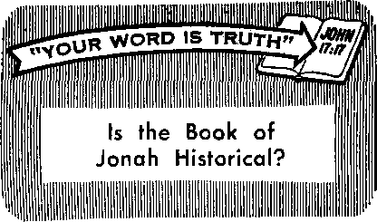

Unforgettable Moments of Pleasure

Lovers of Pleasures Rather than Lovers of God
Lubricants—Man’s Efficient Servants
You Can Teach Your Children to Read
I»■■■III iW i mm
THE REASON FOR THIS MAGAZINE
News sources that are able to keep you awake to the vital issues of our times must be unfettered by censorship and selfish interests. "Awake!" has no fetters. It recognizes facts, faces facts, is free to publish facts. It is not bound by political ties; it is unhampered by traditional creeds. This magazine keeps itself free, that it may speak freely to you. But it does not abuse its freedom. It maintains integrity to truth.
The viewpoint of "Awake!" is not narrow, but is international. "Awakel'1 has its own correspondents in scores of nations. Its articles are read in many lands, in many languages, by millions of persons.
In every issue "Awake!1' presents vital topics on which you should be informed. It features penetrating articles on social conditions and offers sound counsel for meeting the problems of everyday life. Current news from every continent passes in quick review. Attention is focused on activities in the fields of government and commerce about which you should know. Straightforward discussions of religious issues alert you to matters of vital concern. Customs and people in many lands, the marvels of creation, practical sciences and points of human interest are all embraced in its coverage. "Awake!" provides wholesome, instructive reading for every member of the family.
"Awake!’' pledges itself to righteous principles, to exposing hidden foes and subtle dangers, to championing freedom for all, to comforting mourners and strengthening those disheartened by the failures of a delinquent world, reflecting sure hope for the establishment of God’s righteous new order in this generation.
Get acquainted with "Awake!" Keep awoke by reading "Awake!"
fl BIJRliED SlMULTAN’EOIJflLY IN THE UNITED STATES RY THE WATCHTOWER BIBLE AMD TRACT SOCIETY OF NEW YORK. INC 117 Adams Street Brooklyn, N.Y. 11201. .U.S.A.
ANO in England WATCH TOWER BIBLE AND TRACT SOCIETY Watch Tower House, The Ridycway London N.W. 7. England N. II. Knosr, Pretiftent Grant Suiter. Secretary
Average printing each issue: 5,000,000 5<f a »py (Australia. 5e. Sagth Africa, 3Uc?
Yearly atibscriritlun rates
Qflcw for atmimcrLlily million*
Arnrrica, U.S.. 117 Artam«: Strep.1, Brimklyu. S.Y. llid! Si Australia, 11 IWcsford JUT-. Strathfleld, N S.W. 2 J .'J 5 4
Canada. 150 Bridreland .Wi , Tnrmtlu l:<. Out SI England. Uau-li Tcwei lliiise. J
Tl.i: Ridgeway. I.oniun X.W. 7 • s/'i
Rew Zealand, fit?] .Viut.li Uri.. Anri.land i
SmUi Africa. Private Him 2. P.O. EUritisfonWri. Tri 7<H-
(Monthly editions cost halt the above rates.:
Ramlitatices Rr iiil^rriptiutw ?IjuuIi1 is .<nt io the vjflfii'tj in your couritiy. OtflerM&r "unrl ymir multiwr to Brnkbii. Notice of expiration is win ai. b*M. itvo iani^ l^tora >iitierr]i>hoi) ''xpirrs.
Now published in 26 languages Semimonthly ■ - A f ri ka an >. rnhiujim I'nitfli. English,
Finish. Fr^iH’li. Gentian, Greek, lUku. Italian. .rajiauexe. Kymu. Xorwnfelan. I'oriniw, Srutnisli. Nwedlsli Tagalaj; Zulu.
Monthly OhijieM1, Cui.i.him- HilJga.viKirt, Jiabjahm. I'olisi’. Tamil, I'kramhi
|
CHANGES OF ADDRESS shoild reach us thirty days | ||
|
tiotari year mdving date. Gire |
is your |
old and new |
|
address (If fosslblc, your aid Watch Tower, Watch Tower London N.W. T, England. |
address |
label). Write |
|
Hcusu, |
The Ridgeway, | |
Ktii.itiii as Hx'ond-i'hiM tratliy al ikoiudyii. A Y J'riiiWrl Ln England
The Bible translation rrgilaily used in “Awake?’ U thf New World Transition of the Roly Scriptures, 1961 r.ditian. (Then other translations art ned, this Is clsarly rqarkad.
CONTENTS
Unforgettable Moments of Pleasure
Lovers of Pleasures Rather than
Lubricants -Man's Efficient. Servants
You Can Teach Your Children to Rend 20
Kingdom Ministry School
"Your Word Is Truth"
Is the Book of Jonah Historical?
Volume XLIX London, England, May 22, 1968 . Number 10
PLEASURE is a state of inner enjoyment. It is exaltation of spirit, gladness or delight. Awe and a sense of wonderment arc often a part of memorable pleasure.
Not all people find pleasure in the same way or to the same extent. A humanitarian finds pleasure in the service of his fellowman. An observant person with an eye for beauty finds pleasure in the marvelous colors, designs and variety in creation. A Christian finds pleasure in the worship of God. To some, the pleasure from these things is deep and satisfying; with others, the enjoyment is soon forgotten. But learning to see things in relation to God and cultivating genuine interest in one’s fellowman give a person insight and help him to make his moments of pleasure ones that are truly unforgettable.
The whole subject of pleasure has become somewhat complicated by such things as the radio and television, the phonograph and the movies, which cause people to be the audience and rarely the participants. There was a time, and not too many years ago, when people found
PLEASURE
: their own a} musements in the home. People sang together, danced and played musical instruments by their fireside and indulged themselves in the pleasure of accomplishment. Or they practiced some craft that took their thoughts from the daily routine as well as giving them the pleasure of achievement. Most of those pleasures are still with us, but among many people in these hurried days they have not been thought of for so long that their appeal has almost been forgotten.
We today are often vaguely aware that uncorrupted pleasure awaits us somewhere, if we will only open our hearts to make room for it. But do we? One autumn a young couple planted some flower bulbs, but when spring came the husband was so busy at his place of business that he had no time to notice that the bulbs had sprouted and beautiful flowers were in bloom. Then one day he passed a beggar who had a sign that read: “It is spring and I am blind.”
“Early the next morning,” his wife said, “my husband arose and walked into the garden where the flowers were blooming profusely. He picked a crocus and
looked into its small purple chalice. As he drank in its beauty he resolved that business, that thief, would never deprive him of such unforgettable moments of pleasure again.” It took a blind man to remind him of the pleasure of spring.
A family, during the electric power failure of November 9, 1965, in the northeastern part of the United States, discovered the pleasure of living in a more relaxed way. They found candles and lighted them. They made a fire and cooked hot dogs on a stick. There was no distraction, no radio, no television. The children read by candlelight. After they went to bed, the parents lingered by the fire, reluctant to give up this unexpectedly lovely evening. “Do you suppose it could be like this more often?” asked the father wishfully. It was a moment of unforgettable pleasure.
Pleasure in Simple Things
Much that brings pleasure is found in little things. Babies as a rule laugh at the iridescent bubbles bursting in their bath. Children get excited at the sight of butterflies. They find exhilaration in learning to read, to whistle, to ride a bicycle and to swim. And there is pleasure in looking back on the days when you did those things and feeling the thrill over again.
An old man revisited a swimming hole of his boyhood days. Moved by the memory of days long past, he took off his clothes and plunged in. The joy that he had when a boy returned to him. He felt young again and shouted for joy.
Many adults breathe deeply and express delight at the subtle scent of honeysuckle or the fragrance of newly mown hay. Generally people brighten up at the song of a bird or they may delight in stroking a kitten. These are experiences that are pleasurable, and they arc simple things.
There is a tendency to forget that pleasurable beauty sur-
rounds us. Unless effort is made to enjoy it, one will soon allow petty distraction to blur the vision. Just as a family quarrel can spoil a beautiful day, so long hours of television watching that features broken families, crime and violence can disrupt one’s inner peace.
A middle-aged couple threatened with failure of their marriage thought that a vacation together away from the rush of modem city life would do them good. They rented a cabin miles away from any signs of civilization. As the owner advertised: “This place is miles from nowhere. No main road for miles around. You will sleep like a log. No traffic noises. As for convenience, you’ve got a broom.” The couple sat on the cabin porch in the evening, under sweet-blooming roses, and talked. “We hadn’t talked like this in years,” the wife said. By day they picked berries, sat in patches of sun, or held buttercups under each other’s chin. When time came for them to leave, they did not want to go. They had found happiness in being together. This vacation became an unforgettable moment in the life of this couple, and it was the simplicity of it that made it beautiful.
The most delicate and sensible of all pleasures are to be found in promoting the pleasure of others. Jesus Christ is quoted as having said: “There is more happiness in giving than there is in receiving.” (Acts 20:35) A young mother was reminded of this when she walked through a supermarket. The smell of newly baked bread brought back treasured memories and fired her imagination. She knew that almost every conceivable kind of bread could be bought at the market or at a nearby bakery, and for less than she could make it. Yet, an unforgettable memory moved her to bake her own bread that day for the pleasure that it would bring to her family. Vividly she recalled the days when she was a child and her mother baked bread. The smell of freshly baked bread and the joy of eating it with homemade butter were pleasures never to be forgotten. The sight and sound of her own family enjoying that pleasure enabled her to relive her own happy experience, but somehow the pleasure was even finer this time because she was the one who was giving.
Robert Kahn in his book Lessons for Life asks: “When life is spent and all added up, what are the memories that warm our hearts? The happy laughter of a child as we swung him high; the joys of an after-dinner hour when we put aside the dishwashing for a bit and just sat and talked.” Simple things, but they bring pleasure because we are taking an interest in others.
Especially children of today’s affluent Western world who enjoy an abundance of almost everything think of pleasure in elaborate terms, such as the expensive dinner, the trip abroad, the big automobile. They imagine pleasure to be a thing that can be bought with money if the price is right. While youth pushes ahead in hot pursuit of “canned” pleasure, the genuine article escapes his notice. Pleasure to .him is a bird if you can catch it. On the other hand, pleasure can be a bird free in its natural setting, reflecting its brilliant colors and song. One’s appreciation and standard of values determine whether one will find pleasure, and in what.
The English author Rudyard Kipling once wrote: “Teach us to delight in simple things.” And in this fast-paced world, one might add: “And help us to simplify our lives to make room for them.” Both
youths and adults deceive themselves with countless pursuits that should bring pleasure but do not. The new home, the new furniture, the brand-new automobile, the fur coat, the diamond ring, the things that should be done and seen. They say: “I’m going to be happy if it kills me.” They think they can force pleasure upon themselves, for they have come to believe that pleasure is a product that can be purchased, packaged and delivered.
But genuine pleasure cannot be forced. It comes without much effort if we have the right outlook on life. It is ours if we draw close to God. And the pleasures that we find will be most unforgettable if we seek them, not only for ourselves, but to share them with others.
Um 4 Pteatuw*
gather than
WARNING k SIGN 7
THERE is nothing wrong with pleasure, when chosen wisely and enjoyed in moderation. Neither the feeling of pleasure nor the impulse to seek it is necessarily sinful, for the moderate desire for pleasure and its fulfillment can and do add to one’s happiness. However, just as a man who takes pleasure in nothing is morbid, unhealthy, so too the one who desires and seeks only pleasure is unbalanced, mentally sick.
Someone has to decide which pleasures are good and which bad, as well as the extent to which one can safely seek and indulge in pleasure-giving activities. And what better One could there be than mankind’s Creator? To the Christian, then, God’s will determines what pleasures may be lightly enjoyed and to what extent.
The written God guides
Word him
of in
such sensitive areas of his day-to-day life. The Bible reveals that the highest and most satisfying pleasure man can enjoy is communion with his Creator. (Ps. 111:2; 112:1; John 17:21) To some this may sound strange, but, nevertheless, it is true. This unique pleasure, however, does not exclude other legitimate pleasures. In fact, other pleasures are greatly enhanced thereby. The pleasures of investigating true science, beauty in art, yes, and even the moderate bodily pleasures of eating and drinking, are all proper and consistent with Christian living when governed by
a sense of closeness to the true God, Jehovah.—Col. 3:23.
Extreme asceticism, that is, a severe mistreatment of the body, a deliberate denying to oneself the normal comforts and blessings of life, is not in keeping with Christian principles. Self-imposed isolation and extreme self-denials practiced by some religious devotees do not reflect the genuine, loving, sharing spirit of Christ and his followers.—Col. 2:16-23; 1 Tim. 4:3-5.
Pleasures that are out of harmony with the Bible’s principles degrade. They enslave the personality and overpower the will of the person indulging in them, and lead to frustrations and many hurtful experiences. To guard against this form of slavery the Scriptures recommend keeping the fleshly body in strict subjection in relation to lawless pleasures.—1 Cor. 9:27; Phil. 4:11-13.
Foretelling this very era in which we live, the Bible warned that men would be “lovers of pleasures rather than lovers of God, having a form of godly devotion but proving false to its power.” (2 Tim. 3:1-5) Referring to the conditions that fulfill that prophecy in our time, historian Arnold Toynbee points to this stress on “pleasure-loving” as ‘a red light of warning for the Western way of life.’ “The last days” of this system of things are truly upon us.
Past history should teach us many things. However, present conditions offer ample proof that mankind in general has learned little from the past. Reminding us that what happened to God’s ancient people, the Israelites, was recorded as a warning for us, the apostle Paul wrote: “Now these things became our examples, for us not to be persons desiring injurious things, even as they desired them. Neither become idolaters, as some of them did; just as it is written: ‘The people sat down to eat and drink, and they got up to have a good time.’ Neither let us practice fornication, as some of them committed fornication, only to fall, twenty-three thousand of them in one day. Neither let us put Jehovah to the test, as some of them put him to the test, only to perish by the serpents.” (1 Cor. 10:6-9) Finally, that nation was given up to destruction by her enemies because of putting lustful pleasures ahead of right worship of its God.
Imperial Rome should also be a lesson to us. Built up into a huge pleasure-seeking empire, it promoted every kind of lewd, disgraceful and unnatural pleasure. Its gladiatorial combats degenerated into wild massacres. Its huge arena, seating some 385,000, was at times lit up by human torches. Girls were thrown to wild animals or dragged around naked by maddened bulls. Fans threw themselves on the funeral pyres of favorite charioteers. The populace cried for bigger and bloodier shows. The empire fell apart. Could anything less have been expected in view of the lessons of history and the warnings of God’s Word?
If history has failed as a teacher, it has failed especially in this one area, to instruct men that immoral pleasures, war, crime and violence do not pay. Much of the behavior in this modern world would lead one to conclude that lustful pleasures and selfish, narrow aims are the pursuits of the majority. Daniel P. Mannix, author of Those About to Die, shows that the very practices that led to Rome’s downfall are the leading pleasures of today. ‘Any modern sports promoter,’ he says, ‘who cared to put on a series of shows duplicating the Roman games would easily be
able to fill the house. Ancient sports in one form or another are all popular.’ The modern television arena seats not merely 385,000, but millions of people of all ages, and the performances of crime, immorality, violence, destruction and death are flashed
The ancient Romans eagerly pursued gory and violent pleasures, but so do modern-day masses who sit in front of their TV sets
Warped
Attitudes
The pleasure pursuit has brought about a change in attitudes tellingly revealed in current vocabulary. The apostle Paul described the attitude of some in his day as: “Let us cat and drink, for tomorrow we are to die.”
right into the living room twenty-four hours a day, every day of the year. Old Rome’s pleasure spree fades into insignificance.
In her hour of shameless corruption Rome had no reverence for religion, even her own multiplicity of gods. What pleasure seeker today holds true religion in high esteem? The godlessness of. this world has left it confused, in a fumbling search for direction and a new moral standard. This loss of a sense of values, this confusion, has come about, according to columnist Walter Lippmann, because man ‘has lost faith in the traditional concept of God. Lacking any star to guide him, he goes off first in one direction and then in another, like a ship drifting at sea without rudder or compass.’
Without faith in God there is no way to understand the real purpose in life. As in Rome’s day the tendency today is to become preoccupied with self. Headier stimulations and excitements are sought. Simple pleasures no longer satisfy. Men turn to drugs, ever more potent, but even these do not satisfy. Frustrations, depressions, berserk tendencies and suicides follow along in the dismal procession.
(1 Cor. 15:32) This was the view in Corinth, celebrated as "the most beautiful and most depraved city of antiquity.” Today, too, we hear such expressions in common use, by youth particularly, as "live for today,” “grab your happiness,” ‘the hereafter may be nothing at all.’
This same irresponsibleness is reflected in the lyrics of the New York World's Fair theme song: “Walk away from every earc. This is your fun time. You are entitled to it.” How can anyone get away from every care? Yet that is what multitudes are now striving to do. They have convinced themselves that the world owes them a living, and that to earn their way by hard work is outdated. This is their "fun time,” and if their dreams of plenty fail to materialize, then there are protests and demonstrations. They see nothing strange about demanding the maximum benefit for the minimum of effort.
Preoccupation with Play
The desire to be entertained is an outstanding feature of the pleasure pursuit. Money spent on spectator sports events has climbed to a peak of $1,500,000,000 and on participant sports to $8,500,000,-
000. The total expenditure in 1960 for sporting equipment alone exceeded $2,-000,000,000, and the figure is now far beyond that. Is there any doubt about where the heart of this generation is? As Jesus Christ so accurately appraised matters: “Where your treasure is, there your heart will be also.”—Matt. 6:21.
A West German industrial research institute recently found that the nation’s fourteen- to twenty-four-year-olds spend some $5,000,000,000 annually, more than a third of that amount on luxury goods. Thrift is an old-fashioned joke among many young Rhinelanders. Buying beauty, style and speed is not considered extravagance. Dressed in chic clothes and carrying transistor radios, they promenade in couples or groups, and ride light motorcycles, which seem to satisfy their love of noise.
In France, youths generally want more money for clothes, apartments, luxuries, cars—all the things that represent “le standing” The story is much the same among the 100,000,000 youths, between the ages of fifteen and twenty-five, from Madrid to Moscow.
Great appeal is made today to the sex instinct, much of it sheer pornography. When Sweden’s Justice Minister Herman Kling was asked whether he thought pornography should be kept out of the hands of the young, he replied; “With the freedom existing between boys and girls in Sweden, they have no need for pornography. They look upon sex as a natural thing.” Many popular magazines are uninhibitedly devoted to the so-called joys of love and sex. The more popular movies are the ones wherein nudity and immoral conduct appear repeatedly. The popularity of this type of entertainment reveals the general appetite for illicit pleasure.
Is there any defense for the modem swing to immorality? The Bible says, No. In fact, the Bible’s divine Author refuses his guidance and protection to a generation that refuses to acknowledge him as God. Wrote the apostle Paul: “That is why God gave them up to disgraceful sexual appetites, for both their females changed the natural use of themselves into one contrary to nature; and likewise even the males left the natural use of the female and became violently inflamed in their lust toward one another, males with males, working what is obscene and receiving in themselves the full recompense, which was due for their error. And just as they did not approve of holding God in accurate knowledge, God gave them up to a disapproved mental state, to do the things not fitting, filled as they were with all unrighteousness, wickedness, covetousness, injuriousness, being full of envy, murder, strife, deceit, malicious disposition, being whisperers, backbiters, haters of God, insolent, haughty, self-assuming, inventors of injurious things, disobedient to parents, without understanding, false to agreements, having no natural affection, merciless.” (Rom. 1:26-31) All these detestable practices are prevalent today because people have forsaken God.
Even those studying trends among modem youths have had to agree with the apostle’s conclusion. They say that youth is reacting to the sustained assault on beliefs that have kept people relatively sane for centuries. These beliefs have to do with the existence of God and his purpose for man and the earth. Men like Darwin, Freud and others attacked those beliefs through their theory of evolution. The clergy came around to accepting that theory and went a step farther—pro-
claimed that '‘God is dead.” The result? Vast numbers of today’s youth are faithless and adrift without direction.
Since evolutionists and their clergy supporters have rejected the Bible, the present generation is left in doubt about what is really moral and what immoral. The traditional churches have lost the respect of youth. Young people have lost patience in the long wait for the political and religious institutions to do something about bringing in a more just system of things among men. Their faith in God’s ability is dead. They want their pleasures now! their blessings now! their kingdom now! And, what is worse, they threaten violence to achieve their wants.
As the saner elements among men brace themselves to meet this era of increasing lawlessness, immorality and violence, what can they do to ensure the safety of themselves and their loved ones? Is there some strong anchor of hope to which they can hold? There surely is. What is it? It is the expectation to which the Bible's promises can lead them, the expectation that, though this whole system of things among men is nearing its end, there is hope for those who “turn away” from the pleasure-mad multitude and demonstrate themselves to be lovers of God rather than lovers of illegitimate pleasures.
The apostle Paul, while foretelling today’s wild and immoderate quest for filthy and immoral pleasures, warned those who at this time find themselves out of harmony with such godlessness to turn away from the evildoers. But that ‘turning away' calls for a return to the sane, accurate thinking that is based on God’s written Word, for the apostle goes on to admonish: “Continue in the things that you learned and were persuaded to believe . . . All Scripture is inspired of God and beneficial for teaching, for reproving, for setting things straight, for disciplining in righteousness, that the man of God may be fully competent, completely equipped for every good work.” (2 Tim. 3:1-5, 1417) The Bible’s accurate message can fortify against the disastrous course of those who are "lovers of pleasures rather than lovers of God.”
Further, those who grasp the urgency and seriousness of the world situation today will recognize that the present intensified pursuit of pleasure is one of the sure signs that we are living in the foretold “critical times hard to deal with,” that we have indeed reached “the last days" of this wicked system of things. It is just as vital to your life to identify yourself with those who give proof of their love for God as it was for those people in Noah’s day to identify themselves with God’s chosen ark builder.
Make no mistake! Jesus Christ spoke with full authority from his heavenly Father when he declared that in the “last days” it would be again "as it occurred in the days of Noah.” (Luke 17:26) Lovers of God and of legitimate pleasures in moderation will receive divine protection and preservation. Lovers of pleasures rather than lovers of God will be engulfed in the greatest trouble of all time. They will be swept into oblivion because of refusing to take note of the multiplying signs of oncoming disaster. Turn away, then, from the blinded devotees of pleasure. Turn positively to God's Word with the same confidence that was so well expressed by the psalmist: “You will cause me to know the path of life. Rejoicing to satisfaction is with your face |or presence!; there is pleasantness at your right hand [of favor] forever.”—Ps. 16:11; Acts 2:28.
HAVE you ever thought, of how much you depend upon the efficient services of lubricants? Without them your automobile would not inn, the big generators supplying your home with electricity would grind to a halt, trains and airplanes would not. move, and, in fact, every moving mechanical device would cease to function. What a problem this mechanical age would have if it suddenly were deprived of all lubricants!
Lubricants are not limited in form and therefore can serve you in many ways. There are liquid lubricants, gaseous lubricants, solid lubricants and semisolid lubricants. In their various forms they keep man and his machines moving by reducing friction.
Friction is the resistance to motion experienced by two bodies in contact with each other. It accounts for the difficulty you have in pulling a heavy log across the ground or pushing a carton of books across a floor. Friction is what makes your hands warm when you rub them together and it makes the steel wheels of a locomotive grip the rails of a railroad track. In fact, you depend upon friction just to walk from one place to another, for it prevents your feet' from slipping.
What it is that causes friction can be understood when a smooth metal surface is examined under very powerful magnification. Irregular hills and valleys of varying heights and depths are seen. The
highest peaks are called surface asperities. When another piece of smooth metal is slid over this surface, its peaks strike the others, which resist the motion, and since only the highest ones in the two pieces touch, the pressure and temperature become high at those tiny spots. This causes microscopic welds that break away as the metal pieces are moved back and forth. Such constant welding and breaking causes severe wear of the surfaces, a noticeable result of friction. To lessen it, something must be used to separate the two surfaces, and that is the valuable service performed by lubricants.
A lubricant can put an almost frictionless film between two moving metal surfaces. It separates the microscopic peaks in them so they do not strike one another. As a result the pieces can be moved with far less energy and cause less heat and wear. That is why a good supply of oil is vital for the smooth operation of your automobile.
What little friction there is when a lubricant separates moving surfaces is due mainly to the shearing stress placed upon the lubricant itself as the portions clinging to the surfaces are moved at different
speeds or in opposite directions. But even under the best conditions there is some occasional metal-to-metal contact that causes microscopic surface damage. These two sources of friction generate very little heat. Substantial heat, however, can result from the stresses placed upon the metal itself. Much of such heat is carried away by the lubricant. Thus the oil in an automobile engine, for example, not only reduces friction but also acts as a cooling agent.
The crankshaft of your automobile is held in place by several bearings. A small space is permitted between a journal on the crankshaft and a bearing so that the shaft will turn freely. When the engine is not operating, the weight of the shaft may squeeze much of the oil out of the bearing, and so the metal of the journal and that of the bearing come in contact at the point where the shaft rests. Such bearings frequently lack sufficient oil when starting from rest, with slight wear being caused for a few seconds until an oil film of sufficient thickness is formed. As each journal floats clear the crankshaft can rotate with very little friction.
Because a rotating journal can act like a pump as it draws oil in one side and sends it out the other there must be a continuous supply of fresh oil for your automobile engine. You should therefore keep the supply of oil at the recommended level. Maintaining any moving part of a machine with sufficient oil or other lubricant is the first principle of lubrication.
What You Should Know About Viscosity
Whether you will use in your car an oil that is heavy and flows slowly or one that flows more freely at the same temperature is a decision that can directly affect the manner in which it operates. The resistance of an oil to flow is called viscosity.
The viscosity of an oil has a direct relationship to its ability to support loads. If its viscosity is very low at the operating temperature of a bearing it may be too thin for maintaining a lubricant film thick enough for preventing friction and wear. A heavy load on a bearing requires an oil with a high viscosity so as to support the heavy journal and to prevent metal-to-metal contact. A light oil would be squeezed out.
Although an engine may start easier in cold temperatures with an oil of low viscosity, the oil may become too thin when the engine is heated up and the car is running at highway speeds. Heat lowers oil viscosity, and with a light lubricating oil it causes viscosity to drop rapidly. Engine parts could, therefore, become overheated from friction, with the possibility of seizure, their being unable to make any further movement.
Automobile owners have a choice of oils that are designed for use in the cold temperatures of winter. These make starting easier because they have been adjusted to flow freely at zero degrees Fahrenheit. During the hot months of summer, engines require a different oil, one that is designed to have a suitable viscosity at 210 degrees Fahrenheit. A winter oil would become too thin at that temperature.
To help motorists select the oil they need for different driving conditions oil companies classify motor oils according to their viscosity at zero degrees and 210 degrees Fahrenheit. Those for winter use are classified with the numbers SAE 5W, 10W, or 20W. Those with heavier viscosity for summer use are classified as SAE 20, 30, 40 and 50. The initials stand for Society of Automotive Engineers, who issued this number classification. Oils with a wider temperature range than these and which permit use the year around are known as multigrade oils.
A multigrade oil that is designed to flow freely at zero degrees Fahrenheit and is able to maintain a satisfactory film strength at 120 degrees Fahrenheit is designated with two viscosity numbers, such as SAE 10W-30, to indicate its viscosity at zero degrees and at 120 degrees. Its viscosity has been strengthened with synthetic materials known as polymers. They minimize the extent to which the oil thins out at higher temperatures. While it is possible to use multigrade oils the year around in some localities, a few of them tend to deteriorate after a relatively short period of engine use.
The type of service for which an oil is suitable is indicated by the letters ML, MM and MS, the “M” standing for automobile engines and the other letters for light, medium and severe service. Diesel engines are meant when the first letter is “D.” Low compression engines that have no special lubrication requirements and that are given light service can use a motor oil that is classified as ML. Those engines receiving medium service, which moans they are operated under moderate to severe conditions, can use MM oil. This oil contains oxidation and corrosion inhibitors. The oils classified as MS are for severe service such as short runs in cold weather and constant city driving that involves trips of five miles or less each time the engine is started. They contain detergent additives as well as chemicals for inhibiting oxidation of the oil and corrosion of metal parts.
Corrosive acids resulting from oxidation of the oil and from combustion as well as other oxidation products such as sludge and vamishlike deposits can be-’ come a serious problem when an automobile is operated for only short distances in cold weather. Long drives at highway speeds can be regarded as light service because they make it possible for an engine to function at its best and to keep itself clean.
There are many types of liquid lubricants used on the many machines man has designed. The most widely used ones are the mineral oils that are obtained by distilling petroleum. There are also various vegetable and animal oils, some of which have been used as lubricants for thousands of years. Ancient chariots appear to have used mutton or beef tallow on their axles. Early steam engines in industrial plants used lard oil or castor oil on their bearings, and large open bearings were lubricated with beef or mutton tallow.
Today castor oil is used in high-speed engines such as in race cars and jet aircraft because it keeps its viscosity over extreme ranges of temperature. It is also useful in temporarily overcoming the problem of an overheated bearing. A few drops of castor oil often solves it by quickly reestablishing an insulating film of lubrication between the journal and bearing. Rupture of the oil film is often the cause of such overheating.
Blown rapeseed oil and fish oil are fre-. qucntly used on the bearings of marine engines that are sprayed with water when they arc hot. Mineral oil in such bearings could gradually be dispelled by the water. Some of the other animal and vegetable oils that have been used as lubricants are sperm oil, whale oil, neat’s-foot oil, olive oil, palm oil and peanut oil. Because fatty oils cling to metals they are often mixed with mineral oils used for supporting heavy loads so as to increase film strength. They help cutting oils, for example, to withstand the great pressures exerted by the edge of a cutting tool on a lathe.
For especially difficult conditions such as in some parts of the gas turbine of a race car or jet plane oils are not satis-
factory, but synthetic lubricants are. These are man-made lubricants that are based upon such chemicals as the sebacate, azelate or adipate diesters. They are able to hold up well under the extremely high temperatures, high speed and heavy loading of these engines. Another chemical used for making synthetic lubricants is silicone. A silicone lubricant can resist oxidation at moderate temperatures and does not attack rubber, plastics or paints.
Greases
In some parts of a machine it is not possible to maintain a steady supply of oil or to prevent oil from flowing away, such as in the wheel bearings of your car. Under such circumstances there are various greases that can be used. Most greases are mineral oils that have been thickened with metallic soaps. When at rest they act as a solid that seals out dirt and water, but when in contact with moving surfaces they act as a liquid lubricant. . The metallic soaps for greases are made by reacting the hydroxides of calcium, sodium, aluminum, barium and lithium with various fats or fatty acids. These various metals produce greases with physical properties that are suitable for various uses.
There are many mechanisms today, especially in the fields of nuclear power, aviation and rocketry, in which greases and oils are unable to serve as lubricants. Tn their place have appeared a number of solid lubricants that permanently maintain their solid state when between moving surfaces. Graphite and molybdenum disulfide are widely used as frictionreducing coatings. Other solid lubricants are silver sulfate, tungsten disulfide, boron nitride, borax, mica and vermiculite. Molybdenum disulfide is virtually unaffected by high temperatures.
NEXT ISSUE!
Medical Experiments and Your Health
Air is also being used as a lubricant under certain conditions. It serves well where there are light loads, high speeds, high temperatures and special environments. The bearings of gyroscopes used in some inertial navigation systems are lubricated with a cushion of pressurized air. So also are the bearings for dental drills that run at 400,000 revolutions per minute.
Frequency of Lubrication
How often a moving part in a machine should be lubricated will vary with circumstances and machine design. A watch, for example, needs lubrication with fine instrument oil, such as one containing neat’s-foot or porpoise oil, no of-tener than once a year. Locks need a silicone or dry graphite lubricant once a year. Sewing machines need regular lubrication, and manufacturers usually supply lubricating instructions as well as the correct oil, one that will not become gummy when left for long periods. A squeaking mechanism is usually a certain indication that a lubricant is needed.
For many years it was customary practice for automobile drivers to change their engine oil every 1,000 miles, but for the past few years longer intervals between changes have been recommended by automobile manufacturers. General Motors, ’for example, recommends that the oil be changed every 6,000 miies or every two months, depending upon which is reached first. This, however, does not apply under severe driving conditions such as when a car averages five miles or less almost
every time it is started, especially in cold weather. A car that is used for this type of driving requires oil changes about every. 1,000 miles because of oil contamination from the by-products of combustion.
Expensive super oils contain almost twice as many additives as many other oils and are helpful for cars being used under severe conditions or which have the positive crankcase ventilation system that is designed to fight smog. The strong acids formed in this system require the extra neutralizing power of these oils. Cars without the smog device or that are operated under moderate conditions can usually get along nicely on less expensive oils.
Even if a person has an exceptionally fine oil filter, it may not be advisable to run a car much beyond the recommended mileage or time period because the chemical additives in the oil become depleted. The oil then deteriorates rapidly. Although the oil base stock does not seem to wear out and the filter may succeed in removing many of the contaminants, the oil will not be able to give the engine the protection it did when the additives were still active. You can buy concentrate additives and put them in the oil, but it is difficult to determine which formulations are needed for the kind of oil stock you have.
Changing the oil filter at regular intervals is just as important as changing the oil, because when it becomes clogged with dirt and other contaminants, it can no longer function as it was intended. So important is the keeping of this filter and the oil clean that some persons recommend that both be changed immediately after driving through extremely dusty conditions. Therefore, how often you change your oil and oil filter depends upon your driving conditions.
Some cars require greasing only once a year or every 30,000 miles, but this is to be done with a special grease. If conventional chassis grease is used, greasing is recommended about every 6,000 miles. Parts that may have grease sealed in, such as a steering mechanism, might be regarded by some persons as never requiring fresh grease, but this is not necessarily so. If the car steers with difficulty, it requires grease regardless of what might be claimed about permanent greasing. Greases cannot indefinitely withstand mechanical shearing by moving parts.
In the many machines man has made there are fine lubricating systems that" keep operating smoothly for many years, but these systems compare poorly with those in human and animal bodies. Commenting on this, the Encyclopaedia Britannica observed: “In nature the framework of animals comprises many joints which are so perfect mechanically and so well lubricated with a liquid lubricant that they operate for an entire lifetime with an effectiveness that has never been approached in man-made mechanisms.” Thus the Creator wisely provided for your wonderfully made body to be served by lubricants.
Whether you live in an area where your daily living involves the use of many mechanical devices or you live where few are used, lubricants are needed, and they serve you efficiently.
4 72,000,000,000 pieces of mail are generated in the United States annually; that is half as much mail as the rest of the entire world combined. How much of that mail do you receive? If you count magazines and advertisements, in addition to personal letters, the total may be more than you thought.
INDIA is a land into which many tribes of men have poured, some by armed invasion, others by peaceful penetration, Each one brought along its own peculiar religious beliefs, variations of the religious system originating in ancient Babylon on the plain of Shinar in Mesopotamia. During the centuries some of those tribes had lived in remote and isolated areas, separated one from another, and had developed their own unique rituals of religion; and in the burial customs still observable in India we can note the vestiges of ancient tribal peculiarities.
In actual practice, in India, the word “burial” is but a loose term to describe the disposition of the dead. Often the body is not even put beneath the ground. Elaborate ceremony is common, much of it based upon the belief that the dead are really alive and able to influence the lives of survivors for good or for evil. Fear of the supposed power exercised by “dead men” is a major consideration.
Caste Influence in Hindu Funerals
Even within the preponderant Hindu section of the population strange variations are encountered. The old caste system gave rise to many of these. Consider, for example, the funeral of the Brahmins, the highest of the castes. Their dead are usually cremated atop a pyre, which may be formed by & pit filled with dry wood, or by a pile constructed wholly aboveground. Over the layers of fagots are poured pitch and even butter. The body is bathed, perhaps anointed with butter, dressed in new garments and laid on the pyre. More pitch and butter are then poured on, and the oldest son, if
present, applies the fire to the parent’s face while keeping his glance averted. Others light the pyre at other points, and soon the conflagration is well under way.
Among the Nambuti Brahmins the oldest son carries an earthen pot of water around the pyre. A priest follows, breaks the pot, transfers the water to another pot, and, after throwing the water on the fire, smashes the second vessel. This is supposed to symbolize that the body has been bathed in the “holy” water of the river Ganges and that Agni, the flre-god, witnessed the act. Mourners bring their own towels and bathe and purify themselves immediately after the ceremony. So, where feasible, the pyre is located close to a river.
The ashes of the dead may be placed in an urn and later scattered in a sacred river. Others bury the pot of ashes, while still others wash in milk such bones as may survive the fire, placing these in a funeral urn for burial. Some tribal groups deny the right of cremation to children under six who have not had their ears pierced. Instead, they are simply buried.
There are other unusual Hindu rites. One forest tribe of Bihar tie a rupee or
copper coin to the corpse so that the “soul” does not enter “the next world” penniless. On the tenth day after death the soul is supposedly recalled. At a meeting of two roads rice is offered to a cock; if it eats the rice, this is taken as a sign that the soul has returned, and it is now asked to sit on a broomstick to be carried to its final resting-place—a comer of the house where it joins the other deceased members of the family.
The Lingayat Bunyas are buried whole, in an upright sitting position, with the phallic symbol of the Hindu god Siva held in the right hand. In another contemplative community, the Sanyasis, the dead are buried only after the skull has been broken in order to be sure that there will be immediate transit to “eternal bliss.”
Despite the Hindu belief in transmigration of souls, there is the practice of appeasing dead relatives and honoring them by means of food and drink offerings. Among the Kols, for example, vessels of water are provided in which the dead may bathe themselves. The Khonds in Gum-sur not only leave meals for the dead at the site of the funeral pyre, but also offer rice and fowl on the twelfth day, beseeching the “soul” not to harm its relatives. The Syrian sect of Christendom in Kerala has adopted a variation of the Hindu practice of feasting with relatives and offering some of the choice morsels to the spirit of the deceased. They have prayers in church for the deceased, followed by a big feast at the home.
The Koi tribe of Chota Nagpur collect the bones of the corpse after cremation and carry them in a bamboo tray in procession to all the favorite haunts of the deceased. In Sambalpur the members of the tribe place a ball of powdered rice under a tree with a lamp nearby. The first insect to settle on the rice is believed to be the soul of the deceased, and is carried home and honored.
A rather macabre rite is practiced by the Khairwar tribe of Bilaspur district. Children cut a piece of flesh from the finger of a deceased mother and swallow it. Since the mother carried the burden of the child inside her for nine months,, the child will now carry part of the mother within him, thus guaranteeing that he will not be haunted by the dead parent.
In certain places in South India the corpse of one who died on an “unlucky day” is not carried out through the door of the house, but through a hole made in the wall. Then such a house is abandoned for from three to six months.
What a great difference it would make for many of those people if they but knew and exercised faith in these authoritative words of the Holy Bible: “The living are conscious that they will die; but as for the dead, they are conscious of nothing at all, . . . they have no portion any more to time indefinite in anything that has to be done under the sun”!—Eccl. 9:5, 6.
The Moslems constitute the second-largest community in India. Though they have lived for so long in close proximity to the Hindus, their rites differ radically. Mohammedans, for example, do not cremate, but bury their dead. Over the remains the survivors will raise memorials, each one according to his means. Some of these, such as the Taj Mahal at Agra, are of a magnificence that even outdoes the splendor of public buildings. It is said that this particular mausoleum took 20,000 workmen fifteen years to complete.
When death occurs, there are certain matters immediately cared for by devout
Mohammedans. The eyes and mouth of the corpse are carefully closed, to prevent the soul's seeing or tasting anything disagreeable. The toes are tied together with cloth and the head is turned toward Mecca, the “holy city” of Islam. During the funeral procession from mosque to cemetery friends and relatives take turns carrying the bier. And, to the surprise of the Westerner observing such a funeral for the first time, the mourners purposely cover their heads out of respect for the dead.
When the deceased has been lowered into the grave a professional Muslim will sit there and gravely instruct the “soul” on how to answer the crucial questions that will be put to him by Minikar and Nakir, the two angels who conduct judgment of the dead, according to Islamic belief. The “soul” is instructed to confess that “God is my ruler, Islam is my religion, Mohammed is my prophet, the Koran is my guide and Muslims are my brothers.” By his answers the angelic judges are said to determine whether he will abide, untii resurrection, in peace or in torment.
Mohammedans are taught that Solomon and Christ Jesus were two great prophets of Allah, but strangely they pay little attention to the inspired expressions of these prophets regarding the state of the dead. For example, Solomon declared that “there is no work nor devising nor knowledge nor wisdom in Sheol [the common grave of dead mankind], the place to which you are going.” (Eccl. 9:10) He said nothing about the dead going to any place of torment. And Christ Jesus spoke of one person, already dead for two or three days, as being in a deep, dreamless sleep, which, ordinarily, would not be interrupted until the resurrection “on the last day.”—John 11:11, 14, 24.
Rites of the Parsees
The Parsees, it is said, came to India from Iran more than a thousand years ago, bringing with them the teachings of Zoroaster. According to their religious view, fire, water and earth are sacred, and may not be polluted by disposition of the dead in them. An unsolvable problem? Not at all. They expose the corpses in an open tower, called the Tower of Silence, where they are swiftly disposed of by waiting vultures. An average corpse, by this method, is reduced to mere bones in a matter of only twenty minutes.
Other unusual rites are performed by the Parsees, The body is quite likely to be bathed in the urine of bulls, said to be for purposes of purification. At one point in the proceedings a dog may be given a distant view of the corpse, this in the belief that the look of the dog will discourage evil spirits from leaving the body to harass the living. 'It is also believed that if there were still some life in the body the dog would howl in terror. Mourners walking behind the bier on the way to the Tower of Silence walk in groups, joined together by each grasping a handkerchief or piece of cloth. This is supposed to offer protection, since one person alone is thought to be too easy a target for attack by evil spirits leaving the body.
These followers of Zoroaster claim to stand for good works, good thoughts and good deeds. Hence they explain with pride that their system of disposing of the dead does not waste valuable land on the decaying flesh and bones of the dead. Besides, they will say, it is truly charitable to donate the useless flesh to feed hungry birds. Also, the funeral service is inexpensive, since no grave plot, no coffin, no memorial stones, and no expensive wood pyre are required. Then, too, they will add, the poor and the rich at death are all rightly reduced to the same level.
The Parsees believe that the "soul” of the dead hovers in the vicinity of the corpse for three days before proceeding to "another world,” and so, on the fourth day after death, special prayers for the departing soul are offered and sandalwood is burned on the fire altar. They, too, are concerned about the harmful influence of the dead on the living, even while claiming to be practical and prompt about disposal of their dead. How much happier they could be if they would but accept the assurance of the inspired Bible writer that the dead can no longer even think about the living: "His [the dead man’s] spirit goes out, he goes back to his ground; in that day his thoughts do perish.” (Ps. 146:4) And another inspired Bible writer plainly says: "The soul that is sinning—it itself will die.”—Ezek. 18: 4.
There are, of course, in India many converts to the religion of one or other of Christendom’s many sects. What about their funeral customs? Do they really stand in contrast to those of Hinduism, Islam and Parseeism? Just think of that briefly. If it is a Catholic funeral, prior to burial a light is kept burning by the bier, a cross is placed in the hands of the deceased, and the remains are sprinkled occasionally with “holy water.” Then, there is the custom of watching the dead, not so much because of giving comfort to the survivors as in the belief that the soul is still hovering around and needs the prayers of the living.
The Greek Orthodox ritual, too, has its own peculiarities, which include binding a paper crown around the head of the deceased, laying an open Gospel on the breast, and bidding a symbolical farewell to the deceased by means of a kiss. Lugubrious music and cold, formal prayers punctuate the services of both the East and the West. Contradictorily, too, even the Protestant sects of Christendom hold at one and the same time the idea that the dead are really more alive than ever and the wish that the deceased ones might rest in peace.
So the burial rites of Christendom’s sects in India have much in common with those of the non-Christian religions. Clergymen lead the survivors to believe that the dead are not really dead, but are alive in the invisible world. And this is precisely the kind of reasoning back of all the burial rites of Hinduism, Mohammedanism and Zoroastrianism. On the other hand, the Bible's view of the condition of the dead is clearly indicated by the inspired words of Peter and Paul, the apostles of Christ Jesus, relative to faithful King David of Israel: “Actually David did not ascend to the heavens.” Rather, he “served the express will of God in his own generation and fell asleep in death and was laid with his forefathers and did see corruption.”—Acts 2:34; 13:36.
No genuine comfort for survivors is to be found in all these formalistic burial procedures, most of them founded upon the first lie recorded in history, namely, “You positively will not die.” (Gen. 3:4) The real comfort comes from the assurance of the Bible that “the hour is coming in which all those in the memorial tombs will hear [Christ Jesus’] voice and come out.”—John 5:28, 29.
MOST POPULOUS CREATURE
Of all the insects in the world the industrious ant is by far the most numerous.
YOU CAN
1 A "*
AS A loving parent you want to do all you can to prepare your children for adult lite. If they are truly going to progress, they need to be able to read, and to do it well. This may call for personal help on your part. How well do your children read? Have you ever sat down with them and encouraged them io read to you from a book, such as the Bible? You might be surprised at what you find. If they are not able to read fluently and with good comprehension, the time to learn about it is now.
Perhaps you live in a country where there is a public educational system that provides reading instruction for school-age children, and you may he satisfied with the results of that instruction. In the United States, however, there are many parents who are not satisfied. The magazine U.S. News rf World Report for June 12, 1967, made the following comment: “There is disturbing evidence that millions of youngsters are being graduated from high school with only the barest reading ability. That evidence is bolstered by reports from many colleges that 25 percent or more of their students are gravely deficient in reading.”
This magazine went on to quote from a spokesman for a national chain of department stores as saying; “We give a preemployment test in two parts, reading and arithmetic. The reading part is very simple. We fest them on word recognition.
It's a multiple-choice test. They select words which mean the same thing, then words which have opposite meanings. Four out of five applicants can’t pass the test—and we don’t generally give the test to anyone who doesn’t have at least a high school diploma.” Arthur S. Trace, Jr., an associate professor of English, wrote that about “a third of our high school students can’t read well and that between eight and eleven million of our citizens are functional illiterates.”
Not wanting their children to grow’ up without being able to read well, many parents try to teach their children the art of reading at home. Some begin before their children start school. Others have felt it necessary when they discovered that their children wore not reading satisfactorily after being in school several years. If you want to teach your children to read, you can do it, but you will need to be patient and willing to take the time necessary to do it.
Letter Recognition
Although children as young as one year old can be taught to recognize a few words that have been written in laige letters and pronounced loudly, actual ability to
read cannot begin until a child is able to utter the speech sounds of a language.
The speech sounds of most languages are represented by written letters and so have written alphabets. Some Oriental languages, however, use symbols to represent spoken words, requiring memorization of thousands of symbols. In English all that need to be memorized are twenty-six letters and the approximately forty-four sounds they represent, as well as a few words that are exceptions to the general rules. About 85 percent of English words respond to the sounds represented by their letters.
Once the sounds of the letters are learned a child can read written words he has never before seen. If they are in his speaking vocabulary, he will know what they mean. If not, he can ask his parents for their meaning, and when he has learned to use a dictionary, later on he can look them up. With this knowledge he has the means for constantly increasing his reading vocabulary and for improving his reading ability.
Now suppose you have a child that you want to teach how to read. Where would you begin? The logical place would be with the letters of the alphabet. On a strip of paper print the letters in their proper sequence, showing the capital letters as well as, the lowercase letters. Take a few at a time. When he learns to recognize these, move on to a few more, until the entire alphabet has been learned.
Make a game of it by having the child find from among alphabet blocks the letters you name. You can also have him look at a printed page and point out the letters you ask him to find. Reverse the procedure by having him name the letters to which you point.
Now add to the strip of printed letters the capital and lowercase letters as they appear in handwriting. While teaching him to recognize the letters in this form, have him practice writing them. The art of writing is so closely associated with reading that it should be taught at the same time. Frequent reviews will help to fix the names of the letters in the child’s mind. It is only a matter of practice for recognition of the letters to become automatic. But in order to read he must learn the sounds they represent.
Once your child has learned the sounds represented by the letters of the alphabet, he will be able to read all the words in his speaking vocabulary and all those he understands when someone speaks to him. This represents quite a number of words. A child that is only six years old may have several thousand words in his understanding vocabulary, and this grows with the age of the child. As he gradually acquires ability to give the letters their proper sounds, his reading ability can grow rapidly.
With twenty-six letters in the English alphabet, where are you going to begin teaching the sounds of the letters? It is best to start with the five vowels—a, e, i, o and u. Since each vowel represents more than one sound, you are likely to confuse the child if you try to teach him all the sounds right away. Instead, begin with only the short sounds of the vowels, but do not try to isolate them. Such isolated sounds are not heard when English is spoken. Choose words that use them, and pronounce each word for the child as he looks at it, having him repeat it.
Make this interesting for him by accompanying the words with pictures of what they represent. The word “ant,” un-
der a picture of the insect, can be used to illustrate the short sounding “a." For the short sounding “e” use the word “egg.” The word “ink” can be used to illustrate the short sounding “i,” and a playful otter would be fine for the short sounding “o.” For the short sounding “u” an umbrella could be used. Having pictures for each word helps him to recognize the word and to get used to the sound of the first letter of each.
With his having learned the short sound of the five vowels, you can move on to teaching him the consonants. Most of them have only one sound. Using the same method as with the vowels, choose simple words that can be illustrated and that have vowels with the short sounds. As he makes progress with these words you can introduce the other vowel sounds one by one, using short words to illustrate them. The same procedure can be iollowed with the few consonants that have more than one sound.
Sounding the Syllables
What greatly helps a child to read words, even those he has never before seen, is his learning how to break them up into syllables. So select words that contain more than one syllable, such as kingdom, culture, manifest, and so forth.
Help him to see how such words can be pronounced by covering all but the first syllable. When he says that syllable properly, uncover the next one and so on until the entire word is uncovered. Patiently pronounce the word according to the syllable arrangement. With loving patience you will be able to help him learn this very important step to reading well.
Furthermore, by sitting close to him, sharing the same book, giving him words of encouragement and helping him figure out words by their syllables, you strengthen the bond between yourself and the child. He is made to feel that you are truly interested in him.
With experience and practice he will soon learn how to break words into syllables automatically and swiftly. Even efficient adult readers use an automatic inner pronunciation by syllables, although they give no evidence of it by lip or tongue movement.
The child's reading vocabulary will grow rapidly when he becomes able to figure out the pronunciation of words by breaking them down into syllables. The more reading he does the more words he will learn and the more familiar they will become to him.
There are some irregular words containing silent letters that do not lend themselves to being figured out phonetically, such as the words bought, receipt and laugh, These he will have to learn to recognize. Other words that may have only one or two silent letters can be pronounced phonetically by learning to ignore the silent letters, as in the words debt, sword, gnat and knife. With practice lie will learn to read these words correctly.
You can intensify the child’s desire to read if you set a good example for him by reading good books and magazines yourself. If he never sees you reading and finding enjoyment in it, he will likely conclude that the ability to read is not important and he will not make much effort to acquire it.
Warm approval of his efforts and commendation for his successes are very important to his progress. Avoid losing your patience and giving him the impression that you think he is stupid. If you do, he is likely to stop trying. With these suggestions in mind, you will .find that you can indeed teach your children to read, and to read well.
AT THE world headquarters of Jehovah’s witnesses, located in Brooklyn, New York, a special school provides two-week refresher courses for Christian overseers and their assistants serving in the congregations throughout the United States. It is called the Kingdom Ministry School. Room and board and the study course itself are furnished free to the students. The curriculum emphasizes accurate Bible knowledge and the application of Bible principles in one’s life. •
The students, who come from all walks of life and from a great variety of locations, are delighted at the opportunity to live for a short time with the large Bethel family, the 897 members of the staff of the Watchtower Society. It takes real faith, however, for many of them to attend the school. Many are not so sure that their secular job will still be available upon their return. Others have a long, expensive trip to come to New York. In fact, one recent class of fifty students reported that collectively their total mileage to get to Brooklyn and then back home would be 222,026.
Some of the students have already been many years in the active service of Kingdom preaching, and demonstrate the maturity and stability that come with the years. One recent class could say that its fifty members had spent, to date, 912 years in doing God’s will as dedicated ministers—44 percent of their collective life! So it is not surprising that the Bethel family members are happy to have some brief association with the students as class follows class every two weeks.
Of course, the Witness headquarters is a place that hums with activity, and there is not too much time for getting acquainted with the visiting students. To meet this need, however, there is the fine provision whereby some of the students offer comments on the Bible text for the day at breakfast time, and then two of them tell outstanding experiences each weekday at the dinner table. So, with the aid of closed-circuit television the whole Bethel family is able to see and hear something from each student. Needless to say, dinnertime is looked forward to with real expectation.
One student from Michigan told of the problem he faced when accepting the invitation to come to school: Five children, 35 dairy cows and 25 dairy heifers to care for seven days a week. What was to be done? Sell the herd? No; the children
wanted to keep them and promised to care for everything. Just then the oldest son took on a new job that permitted him to spend more time helping around home. And the oldest daughter was suddenly put back on part-time work. To top it off, the members of the local congregation offered their help with the herd mornings and evenings. With deepened appreciation of Jehovah’s direction, the dairyman came to the Kingdom Ministry School.
Then there was the post-office employee who had to ask for time off in December, the most difficult time of the year. First, he had to explain why to his supervisor. The two-week leave was granted. Then the head of the accounting division canceled the leave on the ground that “being off in December was unheard of.” Again explanations had to be offered, and again leave was granted. Then, just before the time for departure, came a subpoena to appear as a witness in connection with a robbery. But the result was that, in addition to the supervisor and the head of the accounting division, the director of finance, the assistant postmaster and the local U.S. attorney all learned that the purpose of the leave of absence was to attend a school for ministers.
Horn They Got Started
Some of the ministers told how they first became interested in serious Bible study. One from Alabama told that one of Jehovah’s witnesses happened to call at a home where he was visiting and asked the householder if he knew God's name. The subsequent discussion brought out another surprising point from the Bible —not all righteous persons will go to heaven. His interest thoroughly aroused, he gladly accepted the offer of the Witness to come and help him study his Bible. Soon, however, he began to realize what a change he would have to make in his way of life—a change he felt he could not make. He would try to back out tactfully. He tried every method he could think of to discourage the weekly visits of the Witness, even to turning off the heat in cold weather and asking many irrelevant questions. The Witness continued the study, showing great patience. So much so that the student could now say to the Bethel family: “I can now appreciate the need of showing patience with those who show enough interest to get started in a Bible study.”
Another student recalled how, when he was home on shore leave, his sister gave him a copy of the Wateh Tower Society’s book “Let Gad Be True.” Back aboard ship he got to reading it night and day. At the end of the book he noted the addresses of the Society’s branch offices in many lands. In Turkey he could • not make contact since there was no street address, but in Greece he managed to visit the Witnesses in Athens three times, and was convinced that he had found the truth about God’s will and purposes. When his ship returned to the United States, he had but one thing in mind—to find the Witnesses. He spied a piece of paper on the street that looked like one that, had been tucked inside the “Let God Be True” book. It advertised a public lecture, and, sure enough, it was by one of Jehovah’s witnesses. He was just in time, and that was the first of many meetings he attended even before ho was discharged from the Navy and dedicated his life to Jehovah God. How thankful he was that the publications of the Society contain addresses and that handbill invitations are distributed generously!
A student from Arizona recounted his experience. Right after his marriage he was sent out to the Philippines, and during his absence his wife became a dedi-
cated witness of Jehovah. One day a package came from his wife. The first thing he thought of was food. He opened it up, and it was food all right-—food for the mind. The package contained two of the Watch Tower publications. He was quite disappointed, for he never did care to read. After a time his wife again wrote and asked why he had said nothing about the package. He promised he would read the books. And to prove to her that he was reading them he gave her the answers to the questions that appeared at the bottom of each page. When he was home again, his wife one evening asked if he would like to come along with her to the Kingdom Hall. He went along, and that meeting convinced him that there is true Christianity. He was grateful to his wife, who had helped him become conscious of his spiritual need.
Most of the students have family responsibilities that must be discharged faithfully, and that means secular work and contact with all kinds of people. A student from Florida explained' that his job takes him many miles from home and brings him into touch with supermarket managers. Being away from home so much made him conscious of the value of giving a Kingdom witness at every opportunity. For example, when invited to attend the Kingdom Ministry School he had to explain to many of these men that he was going to use his vacation to advance his knowledge of the Bible. Many of them were quite surprised to learn that he was a minister, and asked him many questions. At one store both the store manager and the markets manager wanted to know more about the Bible. They had stopped attending church because the Bible was not being explained there. It was an easy matter to arrange for local Witnesses to call and conduct Bible studies with these men.
The overseer of a congregation in New Mexico told about the happifying results from casually witnessing to fellow employees. “During one of their frequent sales the store I worked for hired a young man to help me with deliveries to a town fifty miles away. As we drove each day across the desert I questioned, him about his beliefs. On learning he was Catholic I asked him to explain his understanding of some of the doctrines. Since he could not do this, I went on to tell him what the Bible said about various subjects such as the cross, the “Trinity,” worship of images, and so on. He listened, asked questions, but would not commit himself.
“He was laid off after about twelve of these trips, and I lost contact with him. Two weeks later he came to the store and invited me to come over and explain to his wife and two sisters the things I had been telling him. A study was started right away, and marvelous progress was made. That young man is now an active witness, and his wife and two sisters have even spent two or three weeks at a time in the house-to-house preaching of the Kingdom message.”
A student from Tennessee told how he overcomes some of the efforts of householders to brush off the house-to-house minister. At one call he made, the woman told him he was wasting his time because her household believed in the teachings of a certain evangelist. He asked if he might speak to her husband. When the man appeared at the door this Witness inquired if the evangelist whom he followed came in the name of Jehovah. The man said, “No, he does not.” Then three scriptures were offered for his attention, one of which was John 5:43. The man’s attitude changed completely and a first Bible study was conducted with him that very day.
Appreciation
The appreciation of these students who have come to attend the Kingdom Ministry School bubbles over with expressions such as these: “We are grateful for the sort of instruction we have received; not just facts and figures, but Biblical principles that will be a sure guide, not only for ourselves, but also for the members of the congregations we serve.” “You Bethelites [members of the headquarters staff] and Gileadites [those currently attending the Watchtower Bible School of Gilead for missionary training], we have been watching you! And we like what we see. Your faithful performance of your varied duties and the maintaining of your productive schedule has amazed and inspired us.”
"How marvelous the instructions received daily by those Jehovah has given as ‘gifts in men’ [appointed overseers in the congregations]! How upbuilding the daily association with the Bethel family and the Gilead students’ What a privilege to hear the daily discussion of the Bible text for each day by so many mature and devoted spiritual brothers!” “The quality of the school's instruction reflects the undeserved kindness of Jehovah. It has given us a view of the Christian organization and its governing body that has elevated our whole pattern of thinking.” “We appreciate the personal interest our King, Christ Jesus, has shown in us through the earthly organization he is pleased to use for the spread of the thrilling message of the Kingdom in these days,”
But this warmth of appreciation will go much farther than words. This is assured by some of these expressed intentions of several recent classes: “We have been equipped to give better quality oversight to our congregations. We are
resolved to apply ourselves diligently in using this training to Jehovah’s glory.” “We hope now to become better teachers, applying not only the information gained here, but also the teaching techniques so ably demonstrated here.” “Realizing the investment in time, money and careful planning that has been put into this program ... it is our firm resolve to apply this investment wisely, and with the help of Jehovah's spirit return a rich spiritual increase in Kingdom blessings for our respective congregations.” “Just as we learned in school that a good talk has a few skyscrapers standing out as highlights, so to us the Kingdom Ministry School stands as the tallest skyscraper to date in our ministerial career.” .
Yes, God’s blessing is so evidently upon this special school for the advanced training of responsible men in the congregations! They can observe the vast amount of work done at headquarters in the production of the literature and the direction of Witnesses all around the world. They are drawn closer to the multitude of fellow Witnesses who serve here. You can imagine, too, the great joy experienced by the members of the Bethel family to have this brief association with fellow ministers from faraway places. It affords them a wonderful opportunity to understand better the needs of the preachers of the Kingdom in all parts of the United States, not to speak of those in other parts of the world. And it is truly inspiring to hear many of those students say what is in their hearts, namely, that 1hey arc determined to improve the quality of their services in the congregations and to aid all to have an increasing share in preaching the good news in obedience to the urgent command of Christ Jesus.—Mark 13:10.
EVER so many modem clergymen dispute that the book of Jonah is historical. Thus Bishop Scarlett in The Interpreter’s Bible, Volume 6, page 875, states regarding the book of Jonah: “It is quite apparent that the book is not history, and obviously it was never intended to be read as history.’’ Such assertions are typical of those who attack the authenticity of the Bible record, but, as we shall see, that is all that they are—assertions.
In the first place, let it be noted that Jesus Christ, the wisest man and the greatest Teacher that ever lived, regarded the book of Jonah as historical, for he repeatedly referred to the account of Jonah to make a point. Jesus asked his hearers to believe on the basis of one miracle that had actually taken place that another would take place: yes, he was going to be raised from the dead after three days just as Jonah on the third day came forth from the big fish. Likewise to stress the guilt of the people of his day, Jesus reminded them of the repentant Ninevites to whom Jonah preached, and here was something greater than Jonah and they were not repenting. Clearly these points would have carried no weight had Jonah not been a historical character.—Matt. 12:39-41; 16:4.
The fact is that every argument presented against the book of Jonah’s being historical can be refuted. True, many kinds of whales could not swallow a man, but the Bible does not say that it was a whale that swallowed Jonah. It simply states, “Jehovah appointed a great fish to swallow Jonah.” But we are told that “whale sharks have jaws wide enough to swallow a man” and are “often more than 50 feet long,”1 (Jonah 1:17) And the sperm whale is fully capable of swallowing a man whole." It is indeed of interest that Joppa, from where Jonah boarded the ship, was a headquarters for whalers,3 And as for Jonah’s being preserved alive in the belly of a fish, since Jehovah preserved alive three Hebrews in a fiery furnace, could he not also preserve alive one Hebrew within a large fish?—Dan. 3:21-27.
Among the arguments used to show that the book of Jonah is an allegory rather than actual history is its lack of certain details. But it is only lacking in such details as Jonah, who was not a secular historian, did not think important, such as the name of the king of Nineveh and the exact spot where Jonah was spewed on dry land. But he does mention details that seemed important -to him, such as that it was a decked vessel and that he went to sleep in the innermost part of the ship.—Jonah 1:3-5.
Then, again, it is argued that the book is not historical because profane or secular history contains no record of Nineveh’s repenting at the instance of a Hebrew prophet’s preaching. But we are not to expect pagan historians to record such an event, especially since it was humiliating to them and they were without faith in God. As Haley’s Bible Handbook observes: “It is not to be expected. For ancient kings recorded only their exploits, never their humiliations. There are, however, traces that a certain king who ruled in Jonah’s day, did institute reforms similar to those of a certain king of Egypt.”
Those finding fault with the record of Jonah also cavil because the record shows God’s sending a storm upon apparently innocent men because of Jonah. But did not Jehovah let Israel under Joshua suffer defeat at Ai so as to ferret out guilty Achan who had taken spoils in the destruction of the city of Jericho? Most assuredly. (Josh. 7:1-26) Critics also complain because the lot at once fell upon Jonah, and. the sea hecaswe cate. as, sw, as Jonah was thrown into it. But does not logic require that these things follow, since God sent the storm for the very purpose of getting Jonah to go to his missionary assignment?—Jonah 1:7-15.
Objection has also been raised as to whether a true prophet of Jehovah God would run away from his assignment. But are not prophets imperfect, just as the rest of us? Were not both Moses and Jeremiah extremely reluctant to accept their missions? And did not Urijah, a prophet of Jehovah in the time of Jeremiah, flee to Egypt, thus also running away from his assignment?—Ex. 4:10-17; Jer. 1:4-8; 26:20-23.
Critics who insist that the book of Jonah is not historical simply will not believe that Jehovah God at any time in the past performed any miracles. They betray their mental attitude by saying, as one of them does, “Do such things happen w a 'wwcld tite eutffse not,
today! But they did happen in times past. Today we do not see creation taking place upon this planet, but it certainly did take place at one time. Likewise there was a time when Jehovah God inspired men to write down his Word- Just because inspired Bible books are not being written today does not argue against the inspiration of the Bible. (2 Pet. 1:20, 21) The fact is that visible creation is filled with wonders that baffle scientists., all of which, might he termed miracles.
Nor to be overlooked is the fact that Jonah is also mentioned at 2 Kings 14:25 as one of God’s true prophets, and that it is the same Jonah is clear from the fact that he is described as the son of Amittai, even as he is at Jonah 1:1. As has well been observed: “It is in fact inconceivable that. . . the Jewish authorities could have received such a book into their canon without the most conclusive evidence as
'anti atii'nenl'iciiy.’*-’
Giving further powerful reply to those who would make the book of Jonah merely allegorical, John Kitto’s Cyclopedia of Biblical Literature states: “The history of Jonah is certainly striking and extraordinary. Its characteristic prodigy does not resemble the other miraculous phenomena recorded in the Scriptures, yet we must believe in its literal occurrence, as the Bible affords us no indication as to its being myths, allegory or parable.. ... It requires less faith to credit this simple excerpt from Jonah’s biography, than to believe the numerous hypotheses that have been invented to deprive it of its supernatural character, the great majority of them being clumsy and farfetched.”
Yes, let modem clergymen taunt that “the author of this magnificent document would turn over in his grave at the thought of such literalism”^ the fact remains that the Bible book of Jonah is historical. Jonah is mentioned as a true flesh-and-blood prophet elsewhere in the Hebrew Scriptures, and the greatest prophet that ever lived, Jesus Christ, the Son of God, certainly viewed the book of Jonah as historical.—Matt. 12:40.
references
i Tfte World Book Encyclopedia (1966). Vol, 17, pp. 299, 300.
3 national GeoprapAic, January 1940. p, 35.
1 Fo'Jswi Vtw Wfl®, Ivan "1. knaerson (1956).
4 Tim Imperial Bible Dictionary, P. Fairbairn. Vol 1, p. 945.
Disrespect for .Authority
On April 12 Dr. Grayson Kirk, president of Columbia University, said that "in many ways our society is in a more perilous condition than at any time since the convulsive conflict between the states a century ago.’’ He went on to say that disrespect lor law and authority has reached such a level of acceptance that "its natural concomitant, resort to violence, has almost achieved respectability.” "Our young people, in disturbing numbers, appear to reject all forms of authority, from whatever source derived,” he said, “and they have taken refuge in a turbulent and inchoate nihilism whose sole objectives are destructive. I know of no time in our history when the gap between the generations has been wider or more potentially dangerous.’’ Dr. Kirk envisaged "no simple or easy solution” to avoid “the danger of large-scale disorder.”
Typhoon Jean Strikes
# Typhoon Jean swept acr oss the Mariana Islands in the western Pacific on April 12 after flattening most of Saipan. Winds of 175 miles an hour leveled hundreds of buildings and badly wrecked the headquarters of the United States Trust Territory.
Catholics Crucified
On April 12 hundreds of Roman Catholic Filipinos flogged themselves and crucified at least two persons to imitate the last sufferings of Jesus Christ. Those fastened to large wooden crosses were left hanging until they lost consciousness and then were taken down. Others flogged themselves in processions behind masked men dragging crosses. This they did despite prohibitions by the Roman Catholic Church and the government.
Church Tax Proposal
<$> The eleven-member Metro executive committee backed the recommendation of the Ontario Committee on Taxation—the Smith Committee— that churches be taxed 35 percent of municipal taxes, instead of being exempted from taxation as they are now. Estimates are that Metropolitan United Church, on Gjueen Street in Toronto, Canada, would have to pay a yearly tax of $187,000. The latter part of March a spokesman for the United Church of Canada said that “the downtown churches would be hit the hardest, of course, but even in smaller communities taxes would be on the average about $6,000 or $7,000 a year and many parishes just couldn’t afford it. And to make it worse, they’d all close down in one fell swoop.” That does not seem to disturb the politicians or the people who appear to view the churches as a passing tradition.
Illegal Abortions
<♦> According to Dr. E. C. Woods, professor of obstetrics and gynecology, about 25 million criminal abortions are carried out throughout the world each year, with a death rate of one in 20. In the United States one survey found that one in five of all pregnancies were terminated criminally. In some countries every second pregnancy is terminated criminally. Dr. Woods said it cost the British government about $6 million a year as part of the national health service to repair damage done to patients during illegal abortions.
Flight from Farms
<§> A growing exodus from the countryside to the cities is taking place in Japan, and this is causing deep concern among Japanese economists and fiscal officials, as the hope of national self-sufficiency in food production rapidly recedes yearly. Both the young men and the farmers’ daughters are leaving the farms for Japan’s throbbing, brightly lighted cities. According to the latest figures, the number of Japanese tilling the soil has dropped to fewer than 10 million, or just under 20 percent of the national labor force and less than 10 percent of the total population. Twenty years ago, 47.3 percent of the population was employed in agriculture.
Alcohol and Accidents
<§> Alcohol is the major contributing factor in most accidental injuries and deaths among Indians in Canada, according to University of British Columbia researchers. Dr. Paul E. Termansen, assistant professor of psychiatry, said
that alcohol is the major contributing cause in Indian ear, boat and gun accidents. Attempted suicides and homicides are frequently related to drinking. Most acute mental illness in Indians is linked with high consumption of alcohol. Many child deaths due to negligent supervision, accidents and fires are also a result of excessive drinking. Dr. Termansen also said that the majority of Indians use alcohol as a method of dealing with emotional problems. But alcohol is no substitute for God’s kingdom, which, not only the Indians, but all men need.
Embezzlers of Church Money
<§> A former pastor of Wahle, Germany, embezzled $11,700 of his church's money. The clergyman explained to the court that he bought $4,250 worth of literature, also spent $1,625 on such things as an automobile, television, dishwasher and washing machine. And he admitted that he squandered some $5,750 in a Hannover nightclub. The 44-year-old clergyman was finally turned over to a psychiatrist for a mental examination.
In another part of Germany a 65-year-old Catholic clergyman was charged with using $85,000 of the church finances for personal matters, He reportedly held back $35,000 from contributions. The temptation of materialism proved to be too much for these clergymen.
Healing Sound Waves
4- The marvels of the human body can be seen in its healing mechanism and the way it responds to treatment. London researchers have discovered a way of getting wounds to heal ir. two-thirds of the normal , time by bombarding them with ultra-high-frequency “silent”' sound waves. The scientists used the new treatment to treat cuts in the ears of rabbits. The cuts took only 34 to 46 days to heal, compared to the usual 50 to 70 days. The doctors believe the sound waves accelerate the movement of cells toward the injury.
An Apostle's Skull .
■<$> Almost all the newspapers tn Cyprus carried items about the "skull" of the apostle Andrew, a disciple of Jesus Christ. Originally the Roman Catholic Church gave the skull to Patras Greece Diocese and from there it was transferred, to Cyprus. It was transported on the warship “Lion’' of the Royal Greek .Navy on October 7, 1967. Literally thousands of people turned out to receive the skull, among whom was Archbishop Makarios and many government, military and municipal officials and high-ranking priests. A procession of cars carried the skull to the Apostle Andrew’s Monastery, where it was stationed for general worship. Thousands filed in, to see and kiss the skull Now it is passed along from one big church to another and crowds come to pay homage to it. The purpose of all of this is to help increase the revenue of the Cyprus church. Is it really Andrew’s skull? This is not at all likely, because no one really knows when or where Andrew died.
Clergyman on “New Morality” <*• A convention of 1,000 teachers at the University of British. Columbia heard Anglican, clergyman James McKibbon state that the “new morality,” involving increased sexual promiscuity, homosexuality and the spread of drugs, is here to stay whether society likes it or not. He said all the pon-tification of the church and pleadings of the older generation are just whistling in the wind. "We can’t go back to those nice, small rural towns in Ontario, as nice as those towns were,” McKibbon said. “We’ve moved into an urban world and something has happened to us morally.” A vast and increasing number of people are starting to question the old values. “They no longer feel part of a group, part of a family, part of a nation, part of a church or part of a class. They in their loneliness have to wrestle out their own morality and it can’t be the old one.”
Matiology Blamed
<♦> Mrs. Laura Sabia, chairman tbfc CcrTD’crnttee lur ■the Equality of Women, asserted that Christendom's religions are largely responsible for the passive attitude of women. “I criticize my own Catholic Church for the disastrous consequences of its Marian symbolism—Mary as the model for all women, the image of passivity and docility,” Mrs. Sabia said. “Mariology has been promoted by a celibate clergy and has led to the rejection of women as persons.” “I become violent,” she said, “when I think of the celibate bishops and cardinals shuttling back and forth to Rome, discussing birth control and abortion, with no married women there to give their point of view openly.”
Church Involvement
in recent years churches in Christendom have become more vocal on secular issues. Parishioners have begun to react to their ministers’ active roles in such things as Civil Righfe ar.d V.w Vietnam waT. A poll taken by the Gallup organization shows a sharp increase over the past decade in the percentage of people who think churches should “keep out of political questions and not express views on day-today social and political questions.” Fifty-three percent of some 1,500 persons interviewed said churches should avoid all political and social involvement, while 43 percent felt they should speak out. The rest had r.e Qptatoia tr. express. First-century Christians, of course, took no part in the
political affairs of the world. They practiced strict neutrality, as do Jehovah's witnesses of today.
Politician Priest
<$• An Anglican clergyman in Melbourne, Australia, has been elected unopposed to a suburban city council as an Australian Labour Party member. The clergyman is the priest of a combined Anglican, Methodist and Presbyterian church, and his parish covers virtually the same area as his electorate. He is reported as saying that he felt that he had to become politically committed, and has been concerned with peace-war issues, race relations and housing problems.
Mailman Mileage
A published Associated Press dispatch stated that mailman Guido Pianta kept a record of the miles he walked and the weight of the mail he carried. On reaching retirement at 64, this mailman from north of Venice, Italy, said he had covered 328,000 miles and delivered 35.2 million pounds of mail.
A Priest on Marriage
<$> "It is ridiculous to assume that because one is married he cannot be a priest,” stated Robert Garcia, Roman Catholic priest who married a divorcee. There "are many priests” who are married, he said. Garcia, referring to the traditional church, declared: “The institutional church, or organized religion, is hopelessly outdated.” It actually is “inhuman and unchristian in many respects,” he stated.
Pigsty Replaces Church
# A published Associated Press dispatch stated that a group of men east of Moscow knocked down an old vacant Russian church to make way for a new pigsty. A Soviet newspaper criticized the move, stating that now-vacant churches should be preserved as historical monuments and tourist attractions. The local farmers, however, thought the area would prove more useful as a pigsty.
World’s Births and Deaths
<$> On an average, 324,000 new babies are born into the world every day. During that same day, 10,000 persons, on an average, will have starved to death or died from malnutrition. In addition, 123,000 persons will die from other reasons, leaving a net gain of about 191,000 each day in the world. Earring any major catastrophe, the Population Reference Bureau predicted that the world's total population would double to 7,000,000,000 before the year 2000. But a catastrophe foretold in the Bible may well prevent that, because we live in the "last days.”
DON’T BE A ii1 ii iiMi । H'Hi ---------DROPOUT
Do you give up when confronted with Bible questions? You need not with "Make Sure of All Things; Hold Fast to What Is Fine.” This hardbound handbook of 512 pages contains Bible quotations on 123 basic topics, with hundreds of subtopics. Get your copy today. Send only 6/3 (for Australia, 75c; for South Africa, 55c).
“Make Sure of All Things; Hold Fast to What Is Fine’’
WATCH TOWER THE RIDGEWAY LONDON N.W. 7
Please send me “Malcp Sure of All Things; Hold Fast to What Is Fine," I am enclosing 6/3 (for Australia. 75c: for South Africa, 55c).
Street and Number
Name ................ ......................................................... or Route and Box ........................................ ...........
Post Postal
Town .. ............................................................. District No. ...._______ County...........................................
Impossible! Why? Because the laws that control true science were made by the same One who authored the Holy Bible.
Can you be sure of that? Beyond the question of any reasonable doubt. How? By a frank and honest comparison.
Have you ever made a serious study of either one in the light of the other? Now you can. Obtain and read the two books listed below. Your first hour will convince you that the Bible record cannot properly be ignored in any evaluation of scientific truth. Send today.
Did Man Get Here by Evolution or by Creation? “Things in Which h is Impossible tor God to Lie"
Both books total over six hundred pages. The copious illustrations interspersed with the text tell a powerful and convincing story in themselves. Both books ate hard hound with gold-embossed covers. Sent postpaid for only 6/6 (for Australia, 75c; for South Africa, 53c).
WATCH TOWER
THE RIDGEWAY LONDON N.W, 7
1 am enclosing 6/6 (for Australia, 75c: for South Africa. 53c). Please send me the two books Did Man Get Here by Evolution or by Creation? and “Thintja in ft Is Impossible for God
to Lie.” For mailing the coupon I am to receive free the timely booklet Wfcen God Is Kin® otter Alt the Earth.
Street and Number
Name ................................ ...............................-............ or Route and Box
Post Postal
Town ........ District No.............County............................................
tn: AUSTRALIA: 11 Beresford Rd., strathfietd, N.S.W. CANADA: 1.50 Bridgeland Ave., Toronto 19, Ont SOUTH AFRICA: Private Bag 2. P.O. Elandsfonteln, Transvaal. UNITED STATES: 117 Adams St, Brooklyn, N.Y. lEilll.
32
AWAKE ’